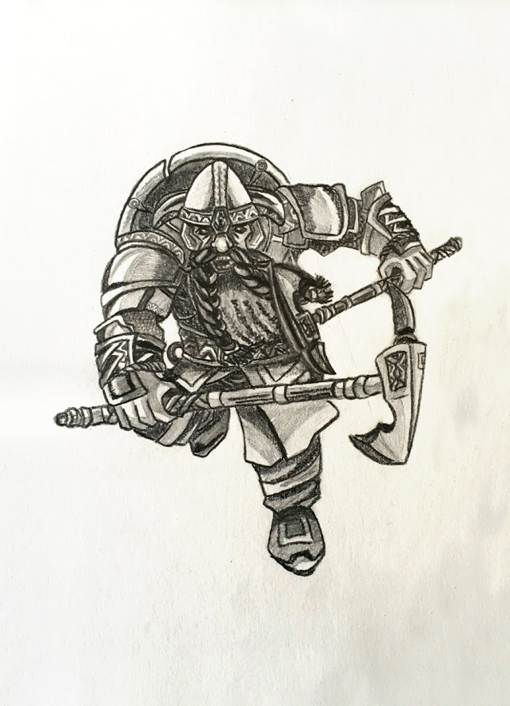
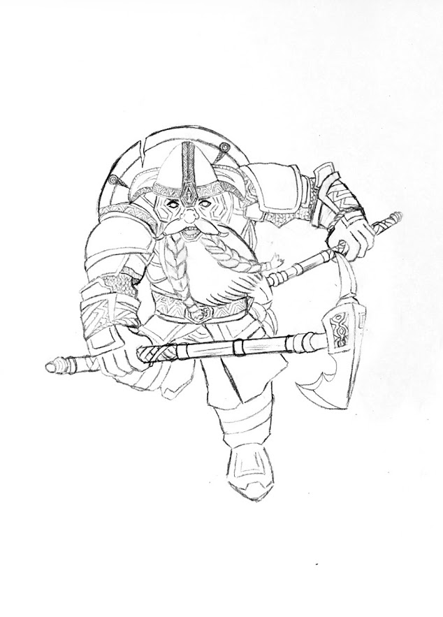

Défi 12 personnages de fantasy : Boïndil
Boïndil deux lames, ou Furibard, est un nain de la série Les Nains de Markus Heitz.
Boïndil est impusif, audacieux et téméraire. Il fonce sur tout ce qui bouge en grognant, d'où son surnom de Furibard. Son frère jumeau est plus sage et réfléchi. Ce sont des combattants du second royaume des nains qui deviendront des accolytes de Tungdil assez rapidement dans l’histoire.
Mon Boïndil, fidèle à sa réputation, charge comme un rhinocéros, toutes dents sorties. Il se bat avec deux haches acérées (d’où son autre appellation, « deux lames »).

J’ai immortalisé mon dessin avant de l’ombrer, de le noircir, juste au cas où l’effet final serait raté. Je voulais aussi ajouter des lignes pour rendre le mouvement plus visible et, du même coup, le dessin plus dynamique, mais je n’ai pas su m’y prendre. Je dois travailler là-dessus.
